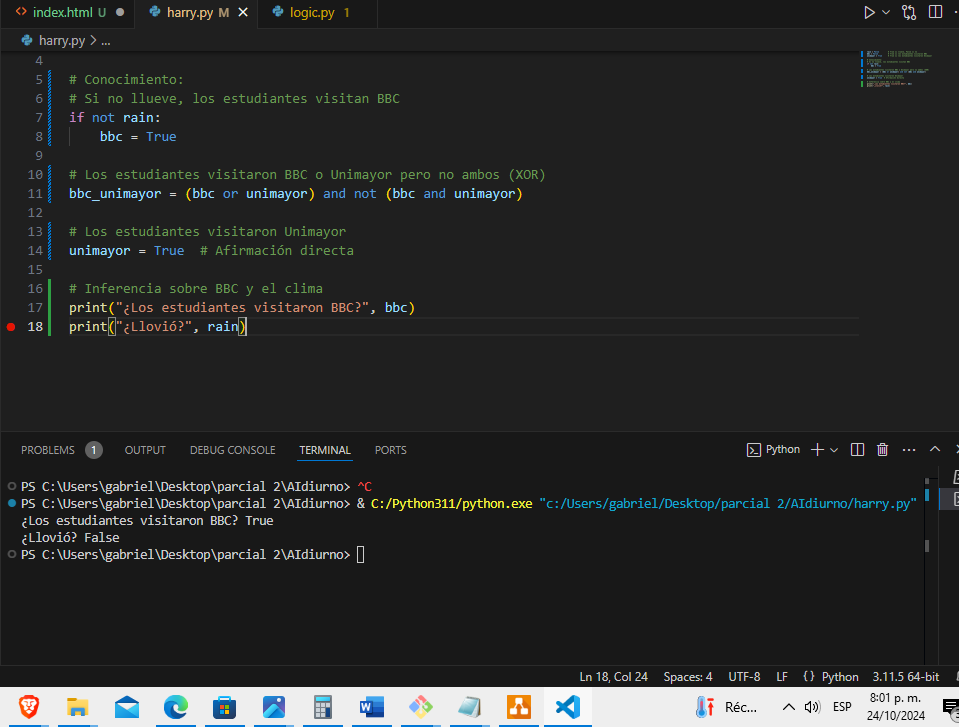
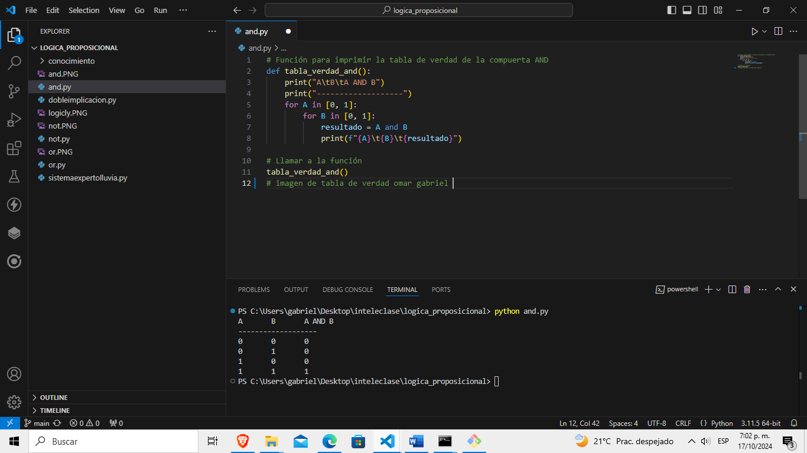
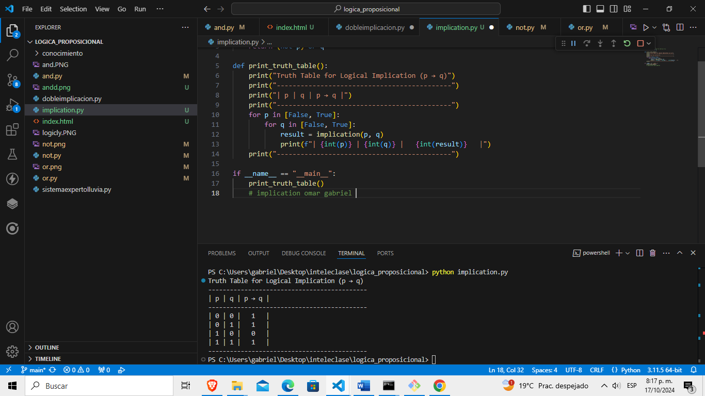
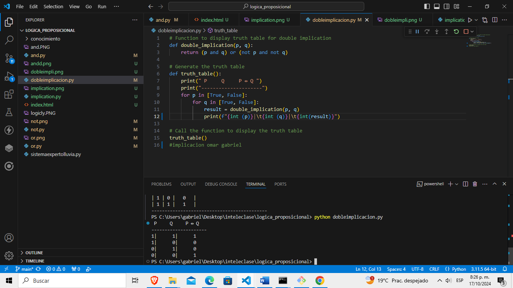
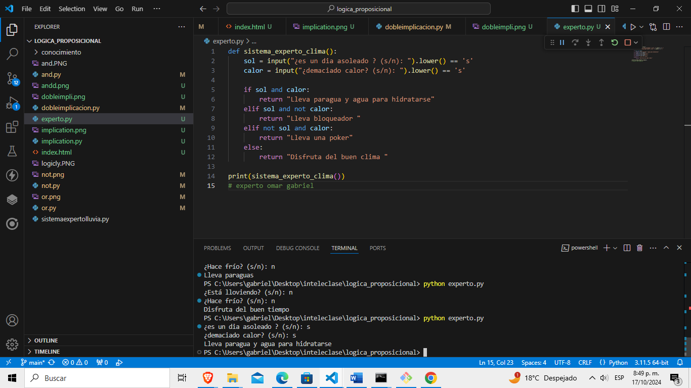

parcial 2 Inteligencia artificial
punto 5 y 6
import itertools
class Sentence():
"""
Clase base para representar una oración lógica.
"""
def evaluate(self, model):
"""
Evalúa la oración lógica utilizando un modelo.
En este caso, es un método abstracto que será implementado en clases derivadas.
"""
raise Exception("nada que evaluar")
def formula(self):
"""
Devuelve una representación de la fórmula lógica en forma de cadena de texto.
"""
return ""
def symbols(self):
"""
Devuelve un conjunto de todos los símbolos presentes en la oración lógica.
"""
return set()
@classmethod
def validate(cls, sentence):
"""
Valida si un objeto es una instancia de la clase Sentence.
Asegura que el argumento pasado es un objeto de la clase `Sentence`.
"""
if not isinstance(sentence, Sentence):
raise TypeError("debe ser una oración lógica")
@classmethod
def parenthesize(cls, s):
"""
Coloca paréntesis alrededor de una expresión si no los tiene ya.
"""
def balanced(s):
"""
Verifica si una cadena tiene paréntesis balanceados.
"""
count = 0
for c in s:
if c == "(":
count += 1
elif c == ")":
if count <= 0:
return False
count -= 1
return count == 0
# Si la cadena ya está entre paréntesis o es una variable única, la devuelve tal cual
if not len(s) or s.isalpha() or (
s[0] == "(" and s[-1] == ")" and balanced(s[1:-1])
):
return s
else:
return f"({s})"
class Symbol(Sentence):
"""
Representa un símbolo lógico.
"""
def __init__(self, name):
"""
Inicializa un símbolo con su nombre.
"""
self.name = name
def __eq__(self, other):
"""
Compara dos símbolos para determinar si son iguales.
"""
return isinstance(other, Symbol) and self.name == other.name
def __hash__(self):
"""
Genera un hash único para el símbolo, para que pueda ser usado en conjuntos y diccionarios.
"""
return hash(("symbol", self.name))
def __repr__(self):
"""
Representación del símbolo en forma de cadena.
"""
return self.name
def evaluate(self, model):
"""
Evalúa el valor del símbolo en un modelo dado.
El modelo es un diccionario donde el nombre del símbolo se asocia a un valor booleano.
"""
try:
return bool(model[self.name])
except KeyError:
raise EvaluationException(f"variable {self.name} no está en el modelo")
def formula(self):
"""
Devuelve el nombre del símbolo como su fórmula.
"""
return self.name
def symbols(self):
"""
Devuelve el conjunto que contiene solo este símbolo.
"""
return {self.name}
class Not(Sentence):
"""
Representa una negación lógica.
"""
def __init__(self, operand):
"""
Inicializa la negación con un operando.
"""
Sentence.validate(operand)
self.operand = operand
def __eq__(self, other):
"""
Compara si dos objetos de la clase `Not` son iguales.
"""
return isinstance(other, Not) and self.operand == other.operand
def __hash__(self):
"""
Genera un hash único para el operador de negación.
"""
return hash(("not", hash(self.operand)))
def __repr__(self):
"""
Representación de la negación en forma de cadena.
"""
return f"Not({self.operand})"
def evaluate(self, model):
"""
Evalúa la negación, invirtiendo el valor del operando.
"""
return not self.operand.evaluate(model)
def formula(self):
"""
Devuelve la fórmula de la negación.
"""
return "¬" + Sentence.parenthesize(self.operand.formula())
def symbols(self):
"""
Devuelve los símbolos del operando de la negación.
"""
return self.operand.symbols()
class And(Sentence):
"""
Representa una conjunción lógica (Y).
"""
def __init__(self, *conjuncts):
"""
Inicializa la conjunción con uno o más operandos.
"""
for conjunct in conjuncts:
Sentence.validate(conjunct)
self.conjuncts = list(conjuncts)
def __eq__(self, other):
"""
Compara si dos objetos de la clase `And` son iguales.
"""
return isinstance(other, And) and self.conjuncts == other.conjuncts
def __hash__(self):
"""
Genera un hash único para el operador de conjunción.
"""
return hash(
("and", tuple(hash(conjunct) for conjunct in self.conjuncts))
)
def __repr__(self):
"""
Representación de la conjunción en forma de cadena.
"""
conjunctions = ", ".join(
[str(conjunct) for conjunct in self.conjuncts]
)
return f"And({conjunctions})"
def add(self, conjunct):
"""
Añade un nuevo conjunción a la lista de operandos.
"""
Sentence.validate(conjunct)
self.conjuncts.append(conjunct)
def evaluate(self, model):
"""
Evalúa si todas las conjunciones son verdaderas.
"""
return all(conjunct.evaluate(model) for conjunct in self.conjuncts)
def formula(self):
"""
Devuelve la fórmula de la conjunción.
"""
if len(self.conjuncts) == 1:
return self.conjuncts[0].formula()
return " ∧ ".join([Sentence.parenthesize(conjunct.formula())
for conjunct in self.conjuncts])
def symbols(self):
"""
Devuelve todos los símbolos presentes en las conjunciones.
"""
return set.union(*[conjunct.symbols() for conjunct in self.conjuncts])
class Or(Sentence):
"""
Representa una disyunción lógica (O).
"""
def __init__(self, *disjuncts):
"""
Inicializa la disyunción con uno o más operandos.
"""
for disjunct in disjuncts:
Sentence.validate(disjunct)
self.disjuncts = list(disjuncts)
def __eq__(self, other):
"""
Compara si dos objetos de la clase `Or` son iguales.
"""
return isinstance(other, Or) and self.disjuncts == other.disjuncts
def __hash__(self):
"""
Genera un hash único para el operador de disyunción.
"""
return hash(
("or", tuple(hash(disjunct) for disjunct in self.disjuncts))
)
def __repr__(self):
"""
Representación de la disyunción en forma de cadena.
"""
disjuncts = ", ".join([str(disjunct) for disjunct in self.disjuncts])
return f"Or({disjuncts})"
def evaluate(self, model):
"""
Evalúa si al menos una de las disyunciones es verdadera.
"""
return any(disjunct.evaluate(model) for disjunct in self.disjuncts)
def formula(self):
"""
Devuelve la fórmula de la disyunción.
"""
if len(self.disjuncts) == 1:
return self.disjuncts[0].formula()
return " ∨ ".join([Sentence.parenthesize(disjunct.formula())
for disjunct in self.disjuncts])
def symbols(self):
"""
Devuelve todos los símbolos presentes en las disyunciones.
"""
return set.union(*[disjunct.symbols() for disjunct in self.disjuncts])
class Implication(Sentence):
"""
Representa una implicación lógica (si... entonces...).
"""
def __init__(self, antecedent, consequent):
"""
Inicializa la implicación con un antecedente y un consecuente.
"""
Sentence.validate(antecedent)
Sentence.validate(consequent)
self.antecedent = antecedent
self.consequent = consequent
def __eq__(self, other):
"""
Compara si dos objetos de la clase `Implication` son iguales.
"""
return (isinstance(other, Implication)
and self.antecedent == other.antecedent
and self.consequent == other.consequent)
def __hash__(self):
"""
Genera un hash único para la implicación.
"""
return hash(("implies", hash(self.antecedent), hash(self.consequent)))
def __repr__(self):
"""
Representación de la implicación en forma de cadena.
"""
return f"Implication({self.antecedent}, {self.consequent})"
def evaluate(self, model):
"""
Evalúa la implicación: si el antecedente es falso o el consecu
punto 6

Parcial segundo corte punto 5
import math
# Definir los jugadores
HUMANO = -1
COMPUTADORA = 1
# Crear el tablero vacío
tablero = [
[0, 0, 0],
[0, 0, 0],
[0, 0, 0]
]
# Función para verificar si hay un ganador
def ganador(tablero, jugador):
win_state = [
[tablero[0][0], tablero[0][1], tablero[0][2]],
[tablero[1][0], tablero[1][1], tablero[1][2]],
[tablero[2][0], tablero[2][1], tablero[2][2]],
[tablero[0][0], tablero[1][0], tablero[2][0]],
[tablero[0][1], tablero[1][1], tablero[2][1]],
[tablero[0][2], tablero[1][2], tablero[2][2]],
[tablero[0][0], tablero[1][1], tablero[2][2]],
[tablero[2][0], tablero[1][1], tablero[0][2]],
]
return [jugador, jugador, jugador] in win_state
# Función para verificar si el tablero está lleno
def tablero_lleno(tablero):
for fila in tablero:
if 0 in fila:
return False
return True
# Evaluar el estado del tablero
def evaluar(tablero):
if ganador(tablero, COMPUTADORA):
return 1
elif ganador(tablero, HUMANO):
return -1
else:
return 0
# Algoritmo Minimax
def minimax(tablero, profundidad, jugador):
if ganador(tablero, COMPUTADORA):
return 1
if ganador(tablero, HUMANO):
return -1
if tablero_lleno(tablero):
return 0
if jugador == COMPUTADORA:
mejor = -math.inf
for i in range(3):
for j in range(3):
if tablero[i][j] == 0:
tablero[i][j] = COMPUTADORA
mejor = max(mejor, minimax(tablero, profundidad + 1, HUMANO))
tablero[i][j] = 0
return mejor
else:
peor = math.inf
for i in range(3):
for j in range(3):
if tablero[i][j] == 0:
tablero[i][j] = HUMANO
peor = min(peor, minimax(tablero, profundidad + 1, COMPUTADORA))
tablero[i][j] = 0
return peor
# Movimiento de la computadora
def movimiento_computadora(tablero):
mejor_movimiento = None
mejor_valor = -math.inf
for i in range(3):
for j in range(3):
if tablero[i][j] == 0:
tablero[i][j] = COMPUTADORA
valor = minimax(tablero, 0, HUMANO)
tablero[i][j] = 0
if valor > mejor_valor:
mejor_valor = valor
mejor_movimiento = (i, j)
return mejor_movimiento
# Imprimir el tablero
def imprimir_tablero(tablero):
for fila in tablero:
print(fila)
# Simulación de juego
def juego():
while True:
imprimir_tablero(tablero)
if tablero_lleno(tablero):
print("Empate!")
break
# Movimiento del humano
fila = int(input("Introduce la fila (0, 1, 2): "))
col = int(input("Introduce la columna (0, 1, 2): "))
if tablero[fila][col] == 0:
tablero[fila][col] = HUMANO
else:
print("Movimiento no válido, intenta de nuevo.")
continue
if ganador(tablero, HUMANO):
imprimir_tablero(tablero)
print("¡Has ganado!")
break
# Movimiento de la computadora
movimiento = movimiento_computadora(tablero)
tablero[movimiento[0]][movimiento[1]] = COMPUTADORA
if ganador(tablero, COMPUTADORA):
imprimir_tablero(tablero)
print("La computadora ha ganado.")
break
# Iniciar el juego
juego()
conocimiento
logicas tablas de verdad
compuerta and

compuerta or

Commpueta Not

implication

dobleimplication

experto
